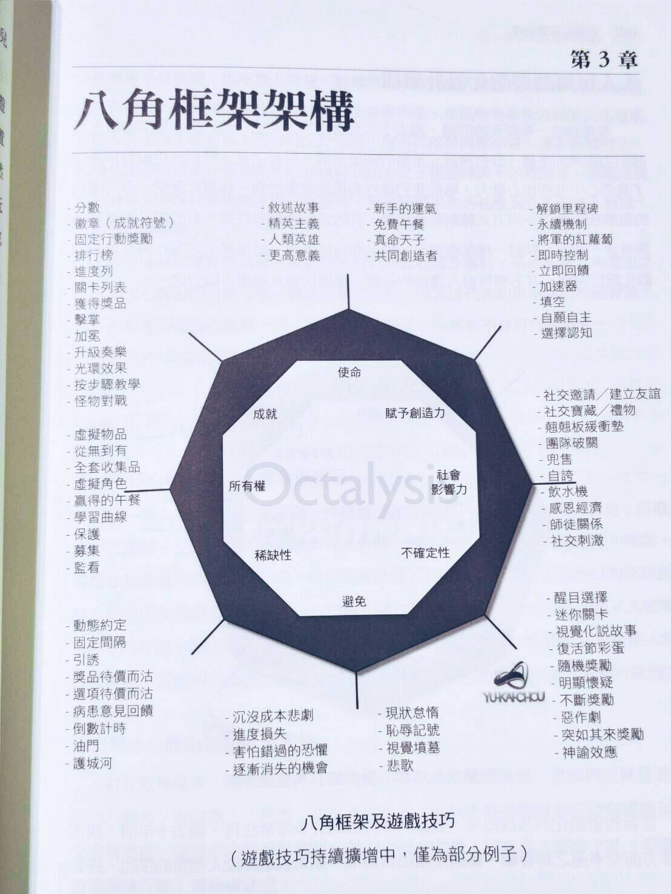

第七章 心流學習法「動機拆解篇」¶
成年人在講學習時，多半講的是效果：
- 跟職業人士一樣流利
- 考試100分
- 速度超越其他人
- 找到工作
- 用技能取得我預想的成果
而且而且必須在短時間取得這些成效。
我相信大家都很 Enjoy 「當大神」「贏」的感覺。
也非常厭倦舊式教育那種讀一堆細碎知識，卻根本沒有什麼成果的學習法。
如何自學時成癮¶
我們又提到了「自學」，本質上就是「自教」。也提到了成人的職業，是在比拼「程序性知識的效率」。還有「概念知識、元知識的存取純熟度」。
所以本質上要快速學會一個技能，就是要對練技能產生上癮，一直不斷的練，才會變成高手。
但是，你又會想，這怎麼可能？
練習，不是很痛苦。怎麼可能會成癮呢？
我在當程式設計師時，實際上是對編程成癮的狀態。但是我學其他學科時，也不一定每次都能進入這種狀態。
所以我也在思考，如何人工造出可以進心流的框架，給自己用，也可以複製給別人用。
從遊戲中挖掘心流與上癮的關鍵¶
2017 時，我為了要打造一個高學成率的大規模線上編程課堂「全棧營」。為了這個問題十分苦惱。
如何讓沒有接觸過編程的人，也能學編程上癮呢？
但是我剛開始一直找不到入門磚。後來我發現這是因為在教育界，是很少對讓學生成癮有相關的文獻的。因為「上癮」在教育界是個負面字。指的是偏離主要軌道沉迷浪費時間。
如果有提到遊戲，多半都是在講如何穿插互動遊戲，提高課堂間的短期專注力。但我要的不是短效專注藥，而是長效專注藥。
我後來轉念一想，為何不轉換領域，直接到遊戲設計領域直接尋找呢？
對我來說「課程」或是「遊戲」都是「縮略版的真實世界」。
但是遊戲設計者對「上癮」的態度可是很正面積極。畢竟遊戲設計的其中一個目的就是為了讓玩家成癮在其中，無可自拔。
同樣是縮略版真實世界。遊戲為何可以大幅搶走學生的專注力，難道不會人覺得好奇嗎？
於是我花了大量時間去研究這四個主題「習慣」、「心流」「成癮」、「遊戲化」，希望找到當中的設計關鍵。
心流¶
匈牙利的心理學者米哈里‧奇克森特米海伊（Mihaly Csikszentmihalyi）在《心流：高手都在研究的最優體驗心理學》 一書提到進入心流狀態有五個要素：
（1）明確目標
要達到心流體驗，首先需要做一件有明確目標的事情，因為目標才會引領專注，才能讓我們投入心力。
（2）即時回饋
即時回饋是達到心流的一個重點，為什麼很多人會沉迷於遊戲或賭博，就是遊戲和賭博有即時回饋，做得如何，馬上可以看到效果。
（3）難度匹配
難度匹配就是當今正在挑戰的關卡，符合挑戰者現在的程度。沒有難度很快就會厭倦，但如果難度太高，又很容易放棄。所以，適當的難度才會激起參與者的持續投入。
（4）全神貫注
把潛在的外界干擾都摒除掉可以讓你更快的進入心流狀態，並且不易被打斷。
（5）持續挑戰
不但要匹配難度，而且要持續提供，讓該項活動一直具有挑戰，這也是刻意練習的核心。只有這樣不斷挑戰，才能長期處於一種全情投入的心流狀態。
上癮¶
心流在學習界，往往指的是一個正面的詞。指的是學習者進入一種渾然忘我的狀態中，飛速學習。
而上癮的表徵，與心流很類似，但在學習界卻是一種反面詞。
“成癮”(Addiction)係指人對某種事物所產生的一種超乎尋常的嗜好和習慣， 這種嗜好和習慣透過刺激中樞神經的獎賞系統(reward system)造成興奮或愉快感而形成“癮”。至於“成癮”則是指個體不可自製地反覆渴求濫用某種物質或從事某種活動，雖然知道這樣做會給自己或已經給自己帶來各種不良後果，但仍然無法控制。
家長因為小孩玩遊戲成癮而荒廢學業。所以家長往往見到學生對某一件事情上癮了。就會強迫學生戒掉。
但在科學上。本質它們都是同樣一件事。都是陷入對中樞神經的獎賞刺激系統循環，才會掉入了精神時光屋。
既然心流就是上癮。
那麼我們要如何打造進入心流/ 上癮的狀態。「心流」一書所提及的：
- （1）明確目標
- （2）即時回饋
- （3）難度匹配
- （4）全神貫注
- （5）持續挑戰
在我的實踐心得來說，我認為這應該只是「 心流」的「表徵要素」。並不是真正的流程。
行為學家Nir Eyal 出了一本書Hooked （鉤癮效應）。當中敘述了人類上癮的是怎麼被人為製造的
HOOKED = TRIGGER（製造契機） -> ACTION （進行動作）-> REWARD （得到獎賞）-> INVESTMENT（重新投資）
放一把火，騷起癢處，再提供解決方案，使用者得到獎賞後，促成某些行為。再利用這個行為，製造下個觸發點的產生，以達到建造下個迴路的結果。
「明確目標」「即時回饋」「難度匹配」是為了讓人類維持在一個平穩的固定行為+獎勵迴圈裡面，而「持續挑戰」是這個行為的循環結果，「全神貫注」是參與者的心理狀態。
所以「上癮」本質上是什麼？
上癮= 「平穩的固定行為」+「獎勵系統」。
更進一步的說，這個「平穩的固定行為」就是「習慣」。上癮= 「習慣」+「獎勵系統」。
你可以仔細想想，手游裡面哪是什麼「挑戰」，我們將游戲解構以後，拿掉遊戲情節以後，你會發現只是手在那裡滑來滑去。你真正期待的是「那個內容物不一樣的」「獎勵寶箱」。
我們在前面學習的章節裡面有提到過，敘述性記憶是很容被人類遺忘的。而重複性的程序性記憶（反覆性的練習）會被人類的身體自動記住。
但是沒有人會很無聊的反覆練一個動作幾十遍。這太無趣了。但是HOOK 到獎勵系統上面就不一樣了。
正確的獎勵設計。不管再無聊的動作，你可能可以刷上一整晚。想想那些熬夜玩打電動的時光吧。
習慣¶
那麼什麼又是習慣呢？
習慣是大腦自動遵循的一些行為模式。我們每天的人生從一睜開眼睛就要面臨著幾百樣選擇。從到底要不要刷牙，該穿什麼衣服，該穿什麼鞋子，該走什麼路線上班，上班該喝什麼東西提神。
無一不需要做出選擇。
但是如果大腦需要對生活中每樣遇到的事，都得判斷過一遍才能做出行動。那麼甚至在踏出家門之前，你的大腦就會當機了。
所以我們大腦會將過去已經下過決策，而且體驗還可以的記憶軌跡，建立起來變成「常規行為」，這件事就叫做「習慣」。
習慣都帶有幾個特徵：
- 簡單的動作
- 重複的動作
- 立即的正面反饋
- 平穩且輕快的情緒反饋(小確幸)
我在美國大師 Bob Pike 的課程設計課，裡面學到了一個設計課程的犀利角度：
做課程要切分模塊重要性。盡量將每個章節的長度縮到15 分鐘之內（實體課）。
主要原因有幾：
- 15 分鐘是保持注意力的最佳長度
- 15 分鐘也是這是留存學習內容的最佳長度
- 切分成小模塊，難度容易控制調整
- 課程結構也很容易剪輯，前後調整
短且簡單的課程，才能夠非常容易植入「習慣設計」。
因為老師不可能透過一個複雜的互動機制、情緒體驗，讓學生養成「習慣」這件事。
很多人常會誤以為，遊戲化就是將游戲化的元素移植到課程裡。
這僅僅只是了解字面上的意思。但將課程遊戲化重點不是將遊戲元素加入課程。
因為一個遊戲不僅止於是具備遊戲元素，就能夠好玩。不然 Steam 上也不會有那麼多不好玩的遊戲了。
能夠成癮的長課程，設計重點應該是是如何將想教授的內容計成一個一個有目標、重複且容易上手的routine（固定動作）。
然後加入「獎勵」以及「遊戲化元素」（激勵元素），讓學生「有動力進入迴圈」「能察覺到自己成長」最後「不自覺得尋求下一輪的重複以得到不同形式的獎勵」。
聽到這裡。各位讀者可能還是覺得這個應該只是假設，怎麼可能把無聊的知識。包裝成好玩的遊戲。
接下來，我就實際拆解一個熱門遊戲，讓大家知道它們是怎樣做到的。這個遊戲甚至可以把無聊簡單的蓋房子遊戲，包裝釣了玩家注意一個月之久。
拆解 2020 年最火爆遊戲「動物森友會」設計上的秘密¶
2020 年 3 月底。因為 COVID-19 肆虐。待在家實在太無聊了。當時，任天堂剛推出一款新遊戲「動物森友會」。大家也知道這款遊戲當時銷售有多火爆。遊戲截圖幾乎刷滿了整個 FB。買都買不到。
所以我也去預訂了一款。沒想到，這款本質上挺蠢的遊戲，竟然鉤住了我跟我妹兩個人一整個月的注意力。
這個遊戲本質上只是很簡單的捉蟲、釣魚、裝潢而已。我們兩個竟然陷在裡面不可自拔。最後，甚至還害我們買了三台 NDS（一人一台，多的一台全天后開機，作為生產原物料的島）。
於是我就很好奇，任天堂這款遊戲，到底是用了什麼套路與動力，能夠把玩家的魂勾的不要不要的。
莫名其妙的讓全球玩家成癮
動物森友會是一款非常神秘的遊戲。
我對遊戲成癮很正常，我妹對遊戲成癮卻很不正常。因為多好玩的遊戲，對他來說都很花時間，而且過於複雜。
結果最後他卻變得比我還沉迷這個遊戲。
當初，這個遊戲本來是我買的。到貨的當天，我妹看我在玩，覺得這遊戲還蠻簡單智障的，加上當時我玩一會睏了想睡午覺。於是就讓他接手玩一下。
本來，他也只是拔拔草，釣釣魚。沒想到，我睡醒後，卻風雲變色。因為我妹覺得拔草釣魚太有趣，於是他把整座島可拔可釣的魚都玩光了。
而且，甚至不願意還我遊戲機。
因為當時任天堂沒有轉移遊戲記錄的機制，於是我的任天堂就只能變成他的。我再買新一台。
接下來的一個月，我妹甚至與遊戲機寸步不離。甚至有時候還一次開兩台 Switch 種田。有這種症狀的不只我妹。幾乎在我 FB 牆上的許多朋友都淪陷了。
每個人都形容這款遊戲有著魔法：「這個遊戲本來覺得蠻智障的，就是打掃一個島釣釣魚而已，不知道為什麼就陷下去了，每天準時起床幫黑心狸克打工」
黑心狸克到底有什麼魔法呢？為什麼這一個看起來弱智又剝削玩家免費打工還黑薪房貸的遊戲，會讓玩家上癮到無法自拔。
就是我們接下來剖析透視的重點。
遊戲動力篇（八角框架）¶
在開始之前，我要推薦一本書，這本書的動力框架會貫穿後面章節的主要結構。
這本書就是 Actionable Gaminification 這本書。
在這本書中，作者周郁凱先生歸納出了一個人類動力框架「八角理論」。
人類去做某事的動力，基本上可以分成八種類別。

如果將這個八角分為上下兩區。上面是白帽正面光明區，下面是黑帽黑暗區。
- 白帽是讓人類感覺到強大、圓滿、滿意的動機元素。
- 而底下黑帽是讓人類覺得著迷、焦慮、上癮的元素。
一般來說：
- 黑帽的驅動力在短期比較強大。比如說被恐懼追逐或讓你立即行動，看到有獎品會馬上跳起來追逐，但是久了以後會無感。
- 白帽的驅動力在短期間無感，長期以來卻會讓你覺得自己在實現偉大事業，能夠長久滿足。
如果我們再將這個八角拆成左右兩邊。
- 左邊的元素又比較偏向外在動機，與周遭比較。
- 右邊的元素又比較偏內在動機，發自內心的驅動力。
動物森友會因為運用簡單的元素，將裡面的動力元素拿捏的非常好。所以這款本質上「幼稚無聊」的遊戲，才讓許多玩家嚴重成癮，最後卻玩到停不下來。
拆解動森套路（前五天）¶
動森的遊戲真要分析，可以分析再往下拆成前五天與後五天的遊戲進度。
遊戲前五天會比較像是一個遊戲的 Onboarding，也就是教玩家學會這款遊戲的一個過程。
為什麼是五天呢？其實我們在設計網站或遊戲時，5 是一個很關鍵的數字。
如果你能讓用戶連續用 5 次。基本上後續他就會養成一個慣性。不太容易 drop 這個遊戲。
所以動森的前五天其實是很關鍵的。
第一天：狸克騙你簽房貸¶
在剛開始玩動森的第一天。動森裡面其實是沒什麼任務的。但是當天結束，狸克很邪惡的騙了玩家簽一個 9800 的房貸。
狸克為什麼要騙用戶簽房貸呢？
這就是讓用戶先誤以為他自己有一個目標。就是他欠了錢需要還。
否則如果來島只有砍樹與釣魚的話，用戶馬上會覺得這是什麼傻逼遊戲，立刻就走了。
當然，第一天能玩的也是有限的。狸克交給玩家一個帳棚就叫玩家回家洗洗睡，明天再回來找他。
所以第一天雖然沒什麼內容，玩家還是會甘願當作「好吧。被騙一天我還能接受，明天看你有什麼說法」。
第二天：讓任務有意義¶
當玩家第二天去找狸克時，他說他有一個朋友要來島上住，還跟玩家說，他願意用 500 的代價，代收購化石。因為此時玩家非常缺錢，拔草都沒這麼好賺，玩家當然想說這應該是有點意思。
不然誰要無償每天拔草釣魚挖化石。
等狸克收滿了額度以後以後，他又開始掰個藉口凹玩家，說正在幫館長找博物館地點。隔天會蓋好。
雖然玩家覺得好像這遊戲很無聊。但是已經答應要幫人蓋博物館了。就會想繼續待一天看看，到底狸克還能搞出什麼說法。
第三天：博物館開張，原來可以蒐集東西¶
博物館館長來了以後。發現突然有新東西可以玩了。就是收集。（所有權動力）
一般玩家有個犯賤心理，看到收集簿，會想要收大全集。
所以玩家就會開始很忙。到處釣魚抓蟲。
原本覺得這遊戲很很智障，突然也覺得不智障了。還會想說哪裡可以抓更多。
這時候機場與里程卷就有用了。
里程的門檻，也會剛好夠讓玩家出一次島。
這裡有個小設計就是每棵樹可以砍三次。為什麼砍三次呢？
因為可能會掉三種不一樣的東西。這讓玩家會覺得「不確定會掉什麼」，就會一直砍一直砍。
釣魚也是相同的原理。我妹妹就喜歡釣魚遠勝於抓蟲。因為他十分享受可以釣出一種神秘大魚的感覺。
而且我竟然也跟著著魔，為了能釣出更多的魚。我竟多買了一台 Switch Lite 在家當作公用南半球，專拿來釣魚用。
第四天：出島交朋友¶
當玩家可以出島以後，會開始發現有陌生的角色。他會想來搬來你的島。
為了幫新玩家蓋房。會意識到前幾天囤的自家材料還真不夠用阿....只好繼續砍木材。
而這些新角色了以後，它們常常做出一些神秘的行為。比如說撩你、逗你、送你東西。
如此新奇（不確定性）會引誘玩家一直跟它們講話互動。
同時這時候因為玩家開始發現有很奇怪的魚、很奇怪的鄰居。開始會將圖片上傳到 FB。
這時候就會一堆人問你這是什麼，虛榮心簡直是爆棚到極點（社會影響力）。
玩家就會覺得我家有動森我光榮。
第五天：蓋自己的家¶
前幾天，其實家裡根本光凸凸的沒啥好玩的。但是等玩家騙來三個島民後。家裡開始可以有一些傢具可以選。玩家就會想要開始蓋一點試看看。
然後這些傢具都很機賊的需要鐵礦。於是玩家出於無奈只好去農里程換券出島去採礦。
至此玩家已經不知不覺得玩五天了。
這時候你覺得自己好窮人生，十分灰心，難道我要農一輩子嗎？
第六天：曙光來了，賣大頭菜的傢伙出現¶
就當你覺得人生灰心時，突然有個賣大頭菜的傢伙來了。結果這傢伙偷偷告訴你一條賺錢密技，就是炒大頭菜期貨可以暴富。
所以你半信半疑的把錢 all in 下去買他的菜。
接下來就過著提心弔膽的日子。這時候玩家已經不知不覺淪為動森里鈴錢（金錢動力）的奴隸了。
因為大頭菜週末就會爛。所以玩家必須在這六天把菜賣出去。菜價一天會報三次。所以逼得玩家一天會回來三次。。。。。。。（害怕失去的動力）
開始有沒有那種邪惡的味道...........
原本都要棄玩了這賊遊戲又把玩家綁了一周。
第七天：據說 KK 要來¶
但是第七天真是沒事幹。要找點事幹阿。這時候狸克就說什麼想要想讓他的偶像 KK 上島。
這時候你就好奇 KK 是誰？
但不管是誰。反正這島要建設到一定 LEVEL 他才要來。
反正玩家也沒事乾，就開始蓋。（其實 KK 是誰根本關我屁事）
然後蓋著蓋著，鎮公所的西施惠就嫌你缺這缺那的。你只好就一直去湊花、裝飾。
莫名其妙的也蓋開始把這島蓋成有點形狀了。
人類就是既然要蓋就要蓋完。這時候狸克就會推銷玩家蓋橋阿蓋斜坡阿。
玩家身為島主，這一定是你的事。（成就、使命、創造）
你一看草泥馬一個基礎建築，最便宜又要 98000。只好繼續打工賺錢。
而且到這裡。幾乎玩家都打工成慣性了。不可能在此時 quit。
限制機制（不讓玩家玩「盡」遊戲，導致中途放棄）¶
這裡面有幾個細部平衡機制。防止玩家過於辛勤破壞遊戲性
1. 里程機制¶
基本上這遊戲常常因為一些亂七八糟的機制或者是迷之不可說的機制，錢也沒有那麼不好拿。但是出島一定要拿里程卷。里程卷只能農的。
這就保證玩家一定會乖乖會去做任務農里程。
無法作弊弊修改。而里程本身有時候綁一些用錢買不到的限定商品，只能用里程卷兌換。
2. 早上 5:00-22:00 的遊戲時間¶
玩家過於辛勤，會提前把遊戲玩「完」，停止遊戲
所以基本上遊戲設計了幾個機制：
- 早上 5:00 才會有新故事進度
- 早上 9:00 商店才會開門，開到 22:00。其餘時間八折收，而且晚一天才給錢降低玩家的週轉率。很多玩家對於這個20%很計較（因為避免損失）。就會農的有所節制
- 申請蓋房蓋橋，都要隔天才會完工
我那段時間都乖乖晚上22:30 睡。早上 6:00 起來打遊戲。簡直健康到不行。
激勵機制（勾起玩家無盡探索的慾望，產生變動獎勵）¶
1. 點數 program¶
這是很厲害的機制。玩家每完成一些小任務。就會得到點數。或者掀開一張未知的成就卡。都是集點制。大概都是重復 3-5個動作就拿到。
這害玩家會不斷的農下去。一個接一個的作。（成就）
2. 收集品¶
博物館真是很厲害的機制。玩家會為了要填滿自家博物館的館藏。天天堅持捕蟲抓魚挖化石。就是要把展廳填滿。
後期，玩家還會發現原來會有 Set。日式傢具、竹林、流星 set...etc
為了要把整套傢具湊出來，又只好不停的農（稀有動力）
3. 特殊節日或活動¶
當你覺得遊戲已經都是農不太好玩的時候。這時候又來一個節日。
比如說復活節或釣魚大賽
害得玩家整天都在釣魚湊釣魚大獎。或者是存蛋存了一整個禮拜，存到都要吐了，換了一套復活節大全集。（所有權動力）（稀有動力）
4. 獨特的島¶
當你農到變成農夫之神時，KK 也來了。這時候就解鎖了地形工具。可以蓋河流、瀑布。甚至鋪路。
你終於可以把當初那些畸形的地都鏟光光，重新規劃成你要的樣子。（所有權動力）（創造動力）
這時候光整個島整地鋪路都市重划，還有光都市重劃的錢，就要再湊一整個禮拜....
更不用說房子變大以後，還要找傢具填滿。簡直是象牙筷子的煩惱。
特別是當你出島以後，看到朋友的島，再看看自己的島，簡直就土的像渣...........（社交動力）（創造動力）
精神時光屋的一個月¶
這就是為什麼正常人能夠注意力被動森圈住整整一個月的原因。
這打破我過去玩遊戲的紀錄。要知道我玩一個 3A 大作（荒野大鏢客2）或 GTA5，遊戲時間都不用兩周就全破關了。
動物森友會最後竟然能讓我整整玩了一個月，真是奇蹟。其實不僅僅是「動物森友會」有這樣的魔力。「勇者鬥惡龍 創世小玩家2」也是類似的套論。
這兩款遊戲，看似是非常輕型的遊戲，卻卻用巧妙的機制，卻讓玩家每天以極低的 effort 能夠連續農一個島濃了整整一個月。
說穿了真的很不可思議。
其實，相同的遊戲機制，我們也可以把它移植到課程與自學上。
你不相信嗎？讓我下一章展示給你看如何做！